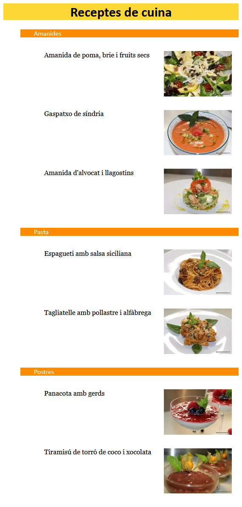

<meta charset="utf-8">
<meta name="viewport" content="width=device-width, initial-scale=1">
<script src="https://cdn.jsdelivr.net/npm/clipboard@2.0.6/dist/clipboard.min.js"></script>
<script type="module" src="/sofi/js/script.js"></script>
<link rel="stylesheet" href="/sofi/css/estil.css">


<header>
    <h1>Pràctica 3: Fonaments de text HTML. Començar amb CSS</h1>

    <resum>En aquesta pràctica començarem amb els fonaments bàsics de l'HTML.</resum>

    <p>Segueix aquests tutorials de la <strong>Mozilla Developer Network</strong>:</p>
   
    <ul>
        <li><a href="https://developer.mozilla.org/ca/docs/Learn/HTML/Introducci%C3%B3_al_HTML/Fonaments_de_text_HTML">
            Fonaments de text HTML
            </a>
        <li><a href="https://developer.mozilla.org/ca/docs/Learn/HTML/Introducci%C3%B3_al_HTML/Crear_hipervincles">
            Crear hipervincles
            </a>
        <li><a href="https://developer.mozilla.org/ca/docs/Learn/CSS/First_steps/Que_es_el_CSS">
            Què és el CSS?
            </a>
        <li><a href="https://developer.mozilla.org/ca/docs/Learn/CSS/First_steps/Com_comen%C3%A7ar_amb_CSS">
            Com començar amb CSS
            </a>
        <li><a href="https://developer.mozilla.org/ca/docs/Learn/CSS/First_steps/Com_estructurar_el_CSS">
            Com estructurar el CSS
            </a>
    </ul>

    <p>La pràctica consisteix a crear una web de receptes de cuina (podeu agafar les receptes de <a href="https://catalunyacuina.com/">CatalunyaCuina</a>). La web ha de tenir:</p>

    <ul>
        <li>
            Una pàgina principal on estigui la llista de receptes:
            <ul>
                <li>Aquesta llista ha d'estar imbrincada, classificant les receptes en categories
                <li>Cada element de la llista ha d'enllaçar a una altra pàgina on es trobi la recepta.
            </ul>
        </li>
        <li>
            S'haurà de fer la pàgina de, com a mínim, dues receptes. Han de tenir:
            <ul>
                <li>Un títol principal
                <li>Títols secundaris
                <li>Paràgrafs.
                <li>Imatges
                <li>Una llista no ordenada amb els ingredients
                <li>Una llista ordenada amb les passes a seguir per a la seva elaboració
                <li>Enllaços a fragments (ingredients i passes)                 
            </ul>
        </li>
        <li>
            Caldrà donar estil a la pàgina utlitzant CSS:
            <ul>
                <li>
                    S'hauran d'utilitzar les següents formes d'aplicació:
                    <ul>
                        <li>Fulls d'estil externs
                        <li>Fulls d'estil interns
                        <li>Estils en línia
                    </ul>
                </li>
                <li>
                    Caldrà utlitzar els següents selectors CSS:
                    <ul>
                        <li><incode css><a href="https://developer.mozilla.org/en-US/docs/Web/CSS/Type_selectors">element</a></incode> (exemple: <incode css>p</incode>)
                        <li><incode css><a href="https://developer.mozilla.org/en-US/docs/Web/CSS/Selector_list">element,element</a></incode> (exemple: <incode css>p, li</incode>)
                        <li><incode css><a href="https://developer.mozilla.org/en-US/docs/Web/CSS/Class_selectors">.classe</a></incode> (exemple: <incode css>.especial</incode>)
                        <li><incode css><a href="https://developer.mozilla.org/en-US/docs/Web/CSS/Class_selectors">element.classe</a></incode> (exemple: <incode css>li.especial</incode>)
                        <li><incode css><a href="https://developer.mozilla.org/en-US/docs/Web/CSS/Descendant_combinator">element element</a></incode> (exemple: <incode css>li em</incode>)
                        <li><incode css><a href="https://developer.mozilla.org/en-US/docs/Web/CSS/Adjacent_sibling_combinator">element + element</a></incode> (exemple: <incode css>h1 + p</incode>)
                    </ul>
                </li>
                <li>
                    Caldrà utilitzar, al menys, les següents <strong>propietats</strong>:

                    <ul>
                        <li><incode css>color</incode>
                        <li><incode css>font-size</incode>
                        <li><incode css>list-style-type</incode>
                        <li><incode css>font-weight</incode>
                        <li><incode css>text-decoration</incode>
                        <li><incode css>background-color</incode>
                        <li><incode css>padding</incode>
                        <li><incode css>margin</incode>
                        <li><incode css>width</incode>
                        <li><incode css>height</incode>
                        <li><incode css>border</incode>
                    </ul>
                </li>
            </ul>
        </li>
        <li>
            L'organització dels fitxers i carpetes de la pàgina ha de ser:
            <ul>
                <li>El fitxer <file>index.html</file> (pàgina principal) ha d'estar a la carpeta arrel
                <li>Els fitxers <file>.html</file> de les receptes han d'estar a la carpeta <directory>receptes</directory>
                <li>El/s fitxer/s <file>.css</file> han d'estar a la carpeta <directory>css</directory>
                <li>Les imatges han d'estar a la carpeta <directory>img</directory>
            </ul>

        </li>

    </ul>
      

    <p>Un cop creda la pàgina s'ha de publicar a GitHub Pages, 
        amb el nom de repository <name>smx-m8-uf5-practica3</name>.</p>
    <h3>Exemple</h3>
    <h4>Pàgina principal</h4>
    
    <h4>Pàgina d'una recepta</h4>
    
</header>

<section>
    <h2>Prepara l'entorn de treball</h2>
    <fer>
        <p>Crea un contenidor anomenat <name>contenidor2</name>:</p>
        <terminal>
            <host>@host</host>
            <shell>lxc launch ubuntu:20.04 contenidor2</shell>
        </terminal>

        <p>Accedeix al contenidor:</p>
        <terminal>
            <host>@host</host>
            <shell>lxc exec contenidor2 bash</shell>
        </terminal>

        <p>Instal·la el servidor-web Apache dintre del contenidor:</p>
        <terminal>
            <host>root@contenidor2</host>
            <shell>
apt update
apt install apache2
            </shell>
        </terminal>

        <p>Crea un parell de claus:</p>
        <terminal>
            <host>@host</host>
            <shell>ssh-keygen -f ~/.ssh/contenidor2 -N ""</shell>
        </terminal>
        
        <p>Mostra la <strong>clau-pública</strong> generada:</p>
        <terminal>
            <host>@host</host>
            <shell>cat ~/.ssh/contenidor2.pub</shell>
        </terminal>

        <p>Selecciona la clau-pública i copía-la (<kbd>Ctrl</kbd>+<kbd>Shift</kbd>+<kbd>C</kbd>). 
            <br>Enganxa-la al fitxer <file>/root/.ssh/authorized_keys</file> del contenidor:
            </p>
        <terminal>
            <host>root@contenidor2</host>
            <shell>echo <kbd>Ctrl</kbd>+<kbd>Shift</kbd>+<kbd>C</kbd> >> /root/.ssh/authorized_keys</shell>
        </terminal>

        <p>Crea una carpeta anomenada <directory>practica2</directory> al host:</p>
        <terminal>
            <host>@host</host>
            <shell>mkdir ~/practica2</shell>
        </terminal>

        <p>Esbrina l'adreça IP del contenidor:</p>
        <terminal>
            <host>root@contenidor2</host>
            <shell>ip a</shell>
        </terminal>

        <p>Sincronitza la carpeta <directory>practica2</directory> del host 
            amb la carpeta <directory>/var/www/html</directory> del contenidor 
            (substitueix la IP de la comanda per la IP que tingui el teu contenidor):</p>
        <terminal>
            <host>@host</host>
            <shell>sshfs root@<red>10.161.122.237</red>:/var/www/html ~/practica2</shell>
        </terminal>

        <p>Finalment obre la carpeta practica2 amb VSCode (<menu-item>File</menu-item> > <menu-item>Open Folder...</menu-item>). 
            <br>Crea el document <file>index.html</file> i desenvolupa la pràctica.</p>

        <p>Pots anar veient els canvis posant la IP del contenidor en la barra d'adreces del Firefox.</p>
    </fer>
</section>
<section>
    <h2>Publica la web a Github Pages</h2>
        <p>Quan tinguis la pràctica avançada, publica-la a GitHub Pages. 
            Hauràs d'anar realitzant <menu-item>commit/push</menu-item> a mesura que vagis fent canvis en la web.</p>
    <fer>
        <p>Per a publicar la pràctica en GitHub Pages, primer hauràs de publicar el repository a GitHub, 
            fent clic sobre . 
            <br>Posa-li el nom <name>smx-m8-uf5-practica2</name> al repository.</p>

        <p>Un cop estigui publicada a GitHub, ves a la pàgina del 
            repository <url>https://github.com/<red>elteusuari</red>/smx-m8-uf5-practica2</url> i ahí fes 
            clic a la pestanya .
            <br>Baixa avall fins a la secció "GitHub Pages". Desplega on diu  en l'apartat Source
            i selecciona la branca "master".</p>
        

        <p>La pàgina quedarà publicada a la URL <url>https://<red>elteuusuari</red>.github.io/smx-m8-uf5-practica2</url></p>
        
        
    </fer>
</section>